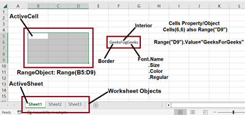

Language: VBA | Leading Technologies Engineering Internship, Summer 2025
A suite of personalized Excel macros built during an engineering internship at Leading Technologies. Automated repetitive manual workflows across multiple departments, eliminating processing time for data consolidation, APQP generation, reject analysis, and employee records management.
